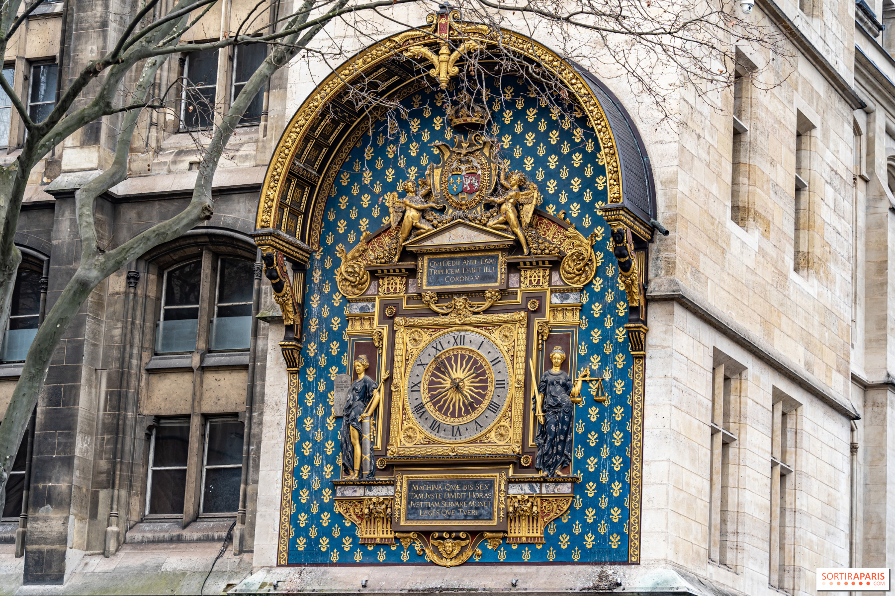

Tappa 1
Orologio
L’orologio della Conciergerie, installato nel 1371, è considerato il più antico orologio pubblico di Parigi. Si trova sulla Tour de l’Horloge, la torre dell’orologio che affaccia sulla Senna. Realizzato dal maestro orologiaio Henri de Vic, serviva a segnare il tempo per tutti i parigini, quando gli orologi personali erano ancora un lusso.Nel corso dei secoli è stato restaurato più volte, e il suo quadrante dorato con decorazioni blu e gigli reali rimane un simbolo del potere monarchico e dell’antica precisione tecnica francese.
